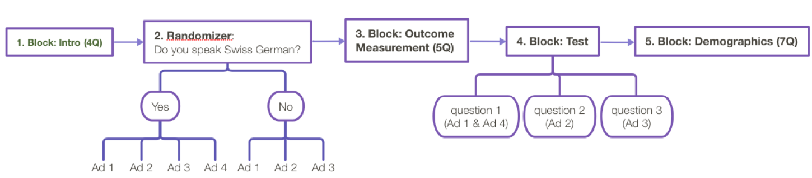
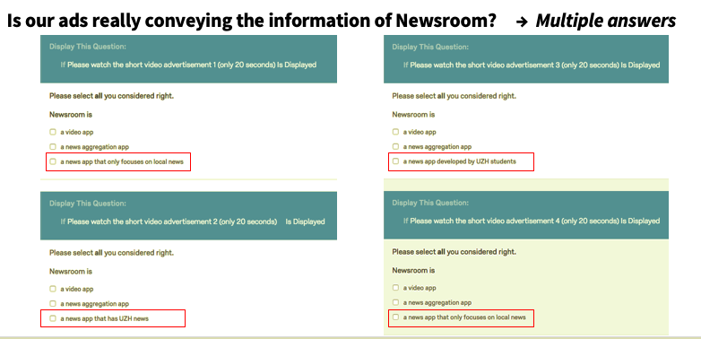
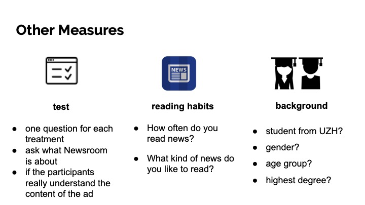

Newsroom是一款由苏黎世大学学生开发的新闻聚合应用，其中包括苏黎世大学新闻（UZH News）。
基于这一独特性，我们将目标受众选定为苏黎世当地几所大学的学生，并设计了四个版本的广告。

假设有
H1: 阅读新闻的UZH学生会被显示Newsroom应用是在UZH制作的广告所吸引。
H2: 瑞士德语使用者即使说英语，也会更喜欢瑞士德语广告而不是英语广告。
Lab实验
我们用这四个版本的广告做了一个Lab实验，测试了我们的假设，并选择了表现最好的两个广告进行现场实验。
我们设置了一个在线调查，随机显示一个版本的广告。
调查流程主要包括五个部分：

在第一个模块中，我们设置了调查的介绍，并跟踪参与者在页面上花费的时间和浏览器信息。参与者唯一需要选择的问题是询问参与者是否会说瑞士德语。
对这一问题的不同回答将他们引向随机器的不同分支。如果答案是 "是"，他们有可能观看四个版本中的任何一个广告，而答案是 "否"，他们有机会观看前三个版本中的一个，除了瑞士德语版本，因为我们假设他们无法理解它。在这两个分支中，呈现的可能性是均等的。
看完广告后，我们请参与者通过回答第三模块的问题来评价广告。
除了结果变量外，我们在第四模块中为每个处理设计了一个问题，询问Newsroom的内容，以测试参与者是否真正理解广告的内容。它们都是多选题：

在最后一个模块，我们询问他们的背景和阅读新闻的态度，从而了解人口因素和阅读习惯是否会影响对广告的偏好。
为了确认大多数参与者与我们的目标受众相匹配，我们设置了几个问题来了解他们的学术背景和个人信息：

在本学期两天的调查中，我们共收到121份回复，我们根据人口统计学的标准选择了111份有效回复作为样本量进行数据分析，其中瑞士人57人，非瑞士人54人，瑞士人68人，非瑞士人43人。其中瑞士人57人，非瑞士人54人，而瑞士人68人，非瑞士人43人。
实验结果
- UZH学生不喜欢UZH的产品
- 英文基础版广告与UZH新闻广告的结果无明显差异
- 广告的吸引力随着需求程度的增加而增加
- 母语广告更有吸引力
现场实验：在Instagram上投放广告
我们选择了英文基础版和瑞士德语版本作为我们将在现场实验中相互比较的两个广告：
Ad 1. 英文版
Ad 2. 瑞士德语版
我们在 Instagram 上锁定了对至少三种不同报纸感兴趣的瑞士人。我们假设一个人阅读的报纸越多，对新闻聚合应用的需求就越高。
尽管其中一个广告是英文的，但我们只用德语作为主要语言。我们忽略了英语这个选项，因为在我们的目标群体中，以英语为主要语言的人数不到5%。我们没有限制年龄，因为我们假设每个使用 Instagram 的人都有足够的技术知识来下载 Newsroom 应用程序。
我们的实验接触了59'000名Instagram用户。
实验结果
根据实验室实验的结果，我们证实了瑞士德语广告与英语版本相比的吸引力。
瑞士德语广告的每次点击成本为2.63瑞士法郎，而英语广告的每次点击成本为5.54瑞士法郎。尽管瑞士德语广告的点击量是英文广告的两倍多，但结果并不显著。
影响
如今，在线广告通常会根据地点以语言显示。受众的母语在网络广告中往往被忽略。
从营销实验中得到的启示是，网络广告可以根据受众的网页语言而不是地点来显示。这样一来，网络广告的有效印象就会增加，从而降低了单位成本。